Design Rationale - Hub
Making choices for the final design
The hubs are the main product of the product service system. They can be compared with a small museum in the form of street furniture, containing display cabinets and benches. Various routes can be followed where the user will come across these hubs. After activation within the app, a story will be told, explaining the objects placed in the display cabinets.
The design process started with looking at already existing street furniture which could maybe serve our purpose. The collages below were a result of this analysis.
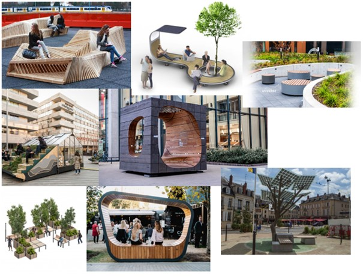 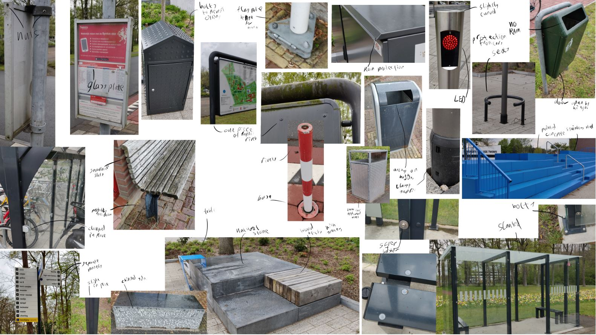The design process started with looking at already existing street furniture which could maybe serve our purpose.
We also thought of elements our hub should contain and made a list of these. Elements marked with a green border were the ones we really should incorporate. Yellow borders are the elements which we should consider, but don't necessarily need to be in there. After this, a list of requirements was made. The list of requirements contains all important aspects where we should think when designing the hub. Both lists can be seen below.
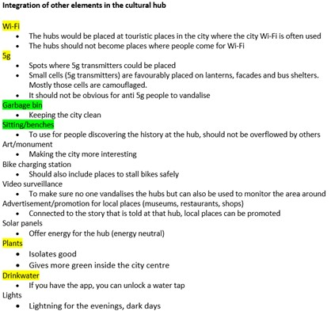 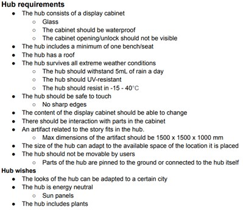The design process started with looking at already existing street furniture which could maybe serve our purpose.
Now the real designing could start where we looked at several different variants of possible hubs which can be seen in the drawings below. Eventually, we chose to continue with the third row left (grey hub with two benches and plants), because this design could be made very modular. This is preferable, because not every city is built the same, with the same amount of room available. Next to that, the design is quite minimalistic, so it would fit in almost all cities. It will not be bound towards one specific city style.
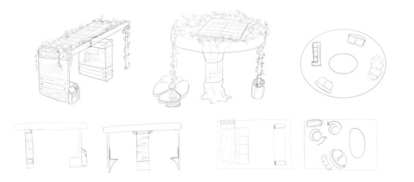 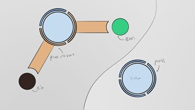 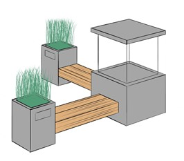 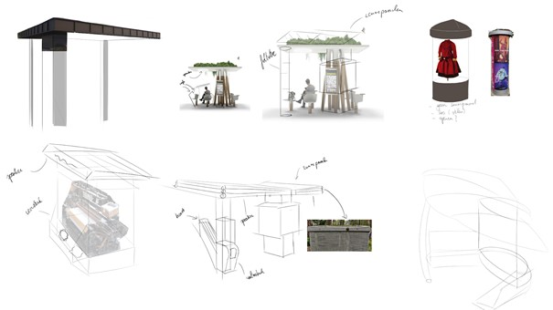The design process started with looking at already existing street furniture which could maybe serve our purpose.
We continued our design process with making two scenarios: one for the worst case and for the ideal case in which our hub will be used. This full documentation can be found in appendix 1. With this information, our requirement list could be updated and some new requirements were thought off. For example, the benches should be comfortable to sit on for around 15 minutes and no longer. Due to this requirement, the hubs would not become a hangout place.
After this, we made some new sketches of the hub, including a roof. However, we found one big roof placed over the entire hub a little bit too bulky. Therefore, in the end we decided to change the big roof into a smaller roof only placed above the bench.
 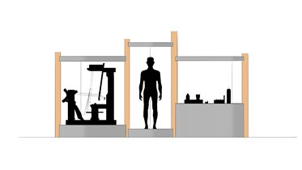
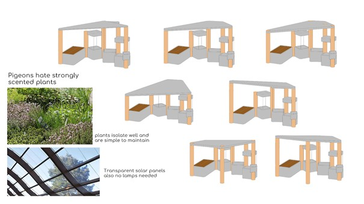
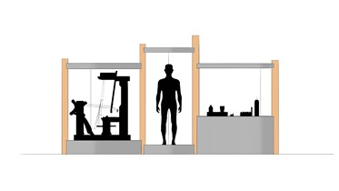
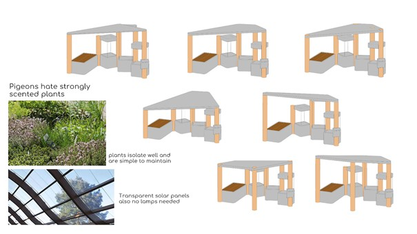
The design process started with looking at already existing street furniture which could maybe serve our purpose.
Next to making scenarios and sketches, we also looked at an article about street furniture. From this information it became clear that certain materials were better suited for our hub than others. This information can be found in appendix 2. Eventually we choose to use the following materials: concrete, steel and wood. As an addition plants will be added to the roof of the hub for several reasons: plants are a good insulator, easy to maintain, scented plants keep pigeons away and the bits of green will brighten up the city.
We also wanted to make sure that people visiting the hub are able to follow the story as well as possible. The story will be told using the speaker of a mobile phone, but in busy areas, where the hubs will be located, it can become too noisy to actually hear the speaker that well. Therefore, a screen will be implemented in one of the display cabinets. In this way, users can read along with the text they hear via their mobile phone. This screen is also used to display a QR-code for activating the hub. The dimensions of this screen will be 200 x 300 mm. The size of the letters used on signs should be proportional to the reading distance: The character width-to-height ratio should be between 3:5 and 1:1, and the character stroke width-to-height ratio should be between 1:5 and 1:10. (The letters and graphic symbols should be raised at least 1 mm from the background, so the visually impaired can read them by touching them.) The smallest letter type should be at least 15 mm, and there should be normal spacing between words and letters. We choose to make sure that the screens are easily readable from 1 meter distance. This means that the size of the letters should be optimally 28pt (max is 34pt) (1).
In the end, the final hubs look like the video below. At this point we made three possible combinations which can be placed in the city centre of Enschede in such a way that they follow the example story we worked out.
The design process started with looking at already existing street furniture which could maybe serve our purpose.
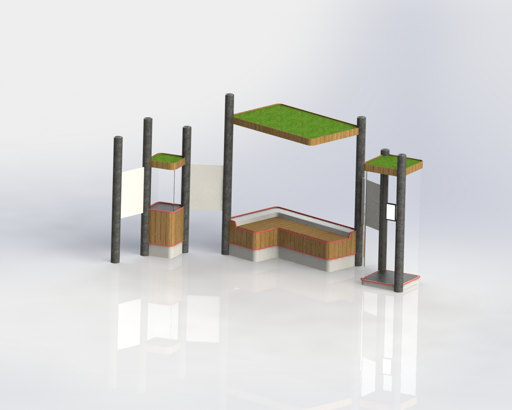 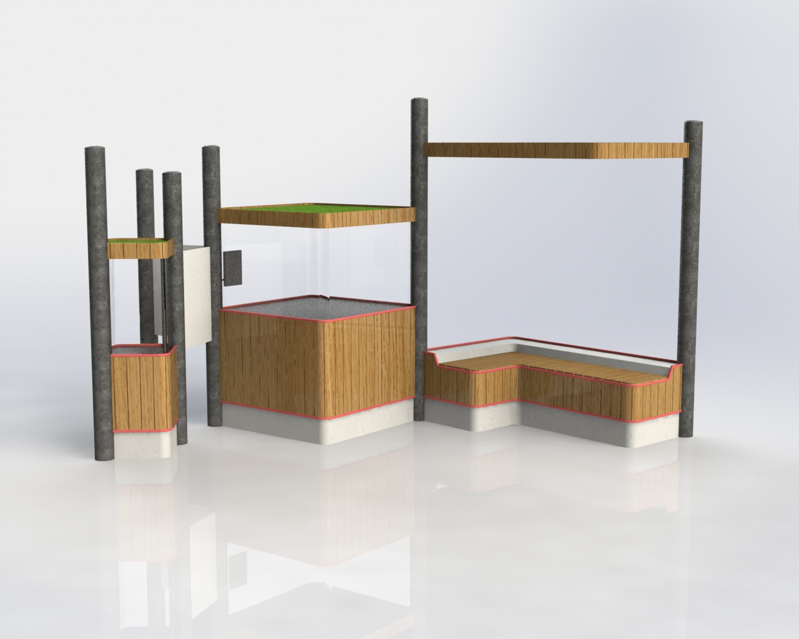 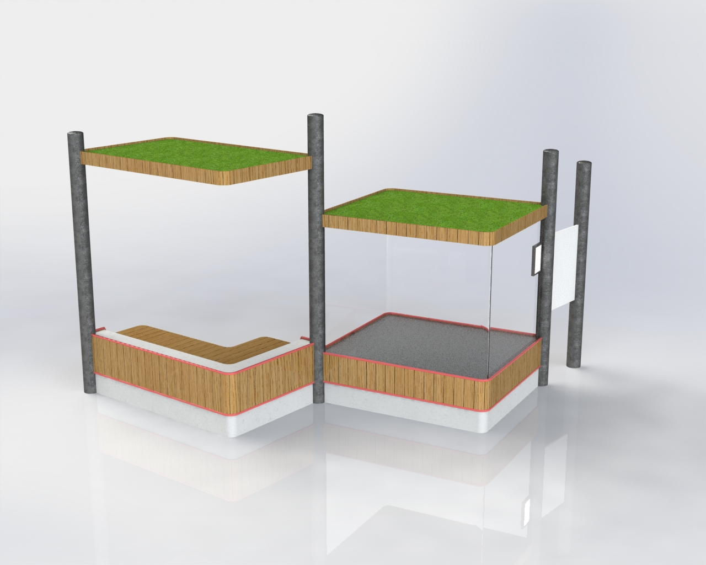The design process started with looking at already existing street furniture which could maybe serve our purpose.
The sizes used for the various cabinets can be seen in the table below. As can be seen we changed the bench a little bit according to the earlier sketches, because with this new design the bench felt more like a connection between the different elements on the left and right side. Small red accents are placed on the bottom part of the hub to give it a little bit more colour. Also, the colour of the company comes back in this way. Furthermore, the small roofs are so-called ‘’grass-roofs’’. The plants on top of the hubs keep pigeons away, make sure the hubs don’t have problems with rainwater drainage, isolate very well and brighten the city.
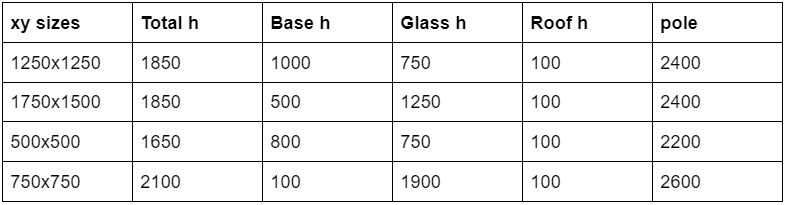The design process started with looking at already existing street furniture which could maybe serve our purpose.
1: https://www.leserlich.info/werkzeuge/schriftgroessenrechner/index-en.php